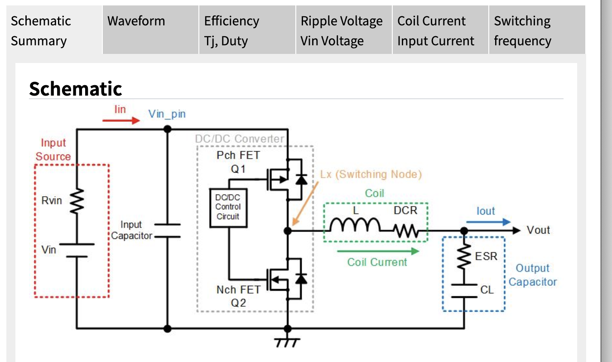

| Series | S-19912=PWM, S-19913=PWM/PFM | |
|---|---|---|
| Condition | ||
| VIN[V] | operate 4V to 36V | |
| VOUT[V] | ||
| IOUT[A] | operate under 0.6A | |
| fsw | 400kHz 2.2MHz | |
| SSFM | Enable | Spectrum spread |
| External Compornents | ||
| L[uH] | ||
| Cout[uF] | 10uF≤Cout≤200uF is recommended | |
| Creg[uF] | 1uF is recommended | |
| RFB1[kΩ] | ||
| RFB2[kΩ] | Approximately 15kΩ is recommended | |
| Cfb[nF] | Recommended value | |

| Operation Condition | ||
|---|---|---|
| Duty[%] | ||
| On time[us] | set On time > 0.08us | |
| Peak Inductor Current[A] | ||
| Current Ripple[A] | ||
| ΔVout[mV] | ||
| fz[kHz] | ||